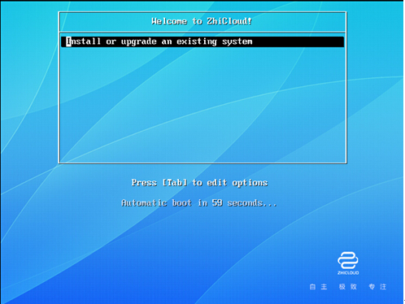
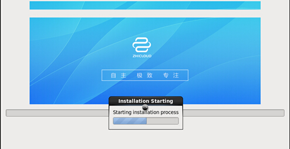
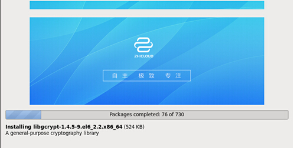
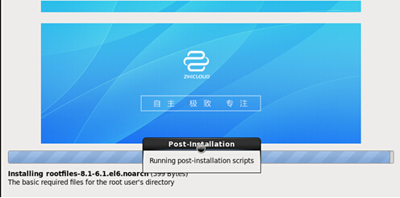
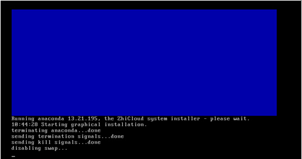
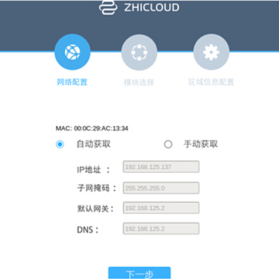

本文档用于帮助新用户，在私有云解决方案下，搭建多节点情况下的致云云管理平台。
致云云管理平台总共包含7个区分功能的模块。它们协同工作，为你提供高可靠、高弹性的Iaas云环境。在私有云解决方案下，除了根据需求选择需要安装的平台模块外，还需要选择模块如何分布于服务器。根据搭建云管理平台时所需服务器情况可以分为All in one和多节点安装。All in one主要用于云管理平台功能演示，它将所有的平台模块安装在一台服务器上，安装文档详见"All in one安装手册"。而生产环境中为了充分发挥云管理平台的功能及性能，需要采用多节点模式。该模式下各个平台模块分布于多个服务器。
本文档帮助你搭建多节点情况下的致云云管理平台。请根据你具体的私有云解决方案在各个服务器安装相应的平台模块，安装了各个平台模块的服务器集群即可构建一套完整的云管理平台。
请根据你的私有云解决方案，准备所需数量的物理服务器。服务器配置要求取决于其上安装的平台模块。具体的硬件配置说明详见附录1。
请准备安装工具：致云云管理平台安装盘或者致云云管理平台的安装ISO镜像文件。
可以通过以下三种途径来安装致云云管理平台。
在服务器上插入云管理平台安装光盘，在服务器启动时选择从光驱启动。
在服务器上插入存储了云管理平台安装ISO镜像文件的USB,在服务器启动时选择从USB启动。
通过服务器BMC地址，输入账号密码进入服务器管理界面。通过java控制台远程控制服务器。从本地选择致云云管理平台的安装ISO镜像文件加载光驱。
安装流程分为以下5步:
当你通过以上任意一种方式进行安装，进入以下界面后，点击回车，开始安装由致云定制的操作系统。





以上过程持续约20分钟，请你耐心等待。
基准系统安装完毕后服务器会自动重启。
重启后的系统默认的用户名和密码是root/123456

首先需要配置服务器的网络信息，网络信息包括：IP地址、子网掩码、默认网关和DNS地址。
可以通过手动设置或DHCP自动获取两种方式来配置服务器网络信息。默认使用DHCP自动获取的方式。

请根据具体的私有云解决方案，选择在该服务器上所需安装的致云云管理平台模块，各个模块的功能详见附录2。
除此之外，web管理端模块提供了管理云平台的图形化管理界面。特别注意：搭建致云云管理平台时，至少要部署一个Web管理端，否则无法对平台进行管理。

致云云管理平台中的各个模块以通信域的方式工作。在同一通信域下的各个模块可以相互通信，进而协同工作。通信域由域名、组播地址和组播端口来标识。注册到同一通信域下的各模块自动识别，构成一套完整的平台。
请确定服务器上安装的平台模块所属的通信域。通信域默认域名domain name为zhicloud，默认组播地址group ip为224.6.6.6，默认组播端口group port为5666。建议使用默认信息。

出现以下页面时，云平台模块已经安装完成并且自动启动。在多台服务器分别安装成功后，你已经成功搭建了一台属于你的致云云管理平台。
请根据页面中提示的云平台web管理端的IP地址和端口（图中http://192.168.125.137:8080），使用默认用户名密码（superadmin/superadmin）登陆网页后，使用云管理平台。

| 服务器 | 配置项 | 最低配置 | 推荐配置 |
| data server | cpu | 2 | 4 |
| 内存 | 16G | 32G | |
| 磁盘 | 50G | 100G | |
| 网卡 | 1000M*2 | 1000M*2 | |
| control server | cpu | 2 | 4 |
| 内存 | 16G | 32G | |
| 磁盘 | 50G | 100G | |
| 网卡 | 1000M*2 | 1000M*2 | |
| storage server | cpu | 4 | 12 |
| 内存 | 32G | 96G | |
| 磁盘 | 3TB | 24TB | |
| 网卡 | 1000M*2 | 1000M*4 | |
| statistic server | cpu | 2 | 4 |
| 内存 | 16G | 32G | |
| 磁盘 | 1TB | 12TB | |
| 网卡 | 1000M*2 | 1000M*2 | |
| node client | cpu | 12 | 36 |
| 内存 | 48G | 128G | |
| 磁盘 | 1TB | 12TB | |
| 网卡 | 1000M*2 | 1000M*2 |